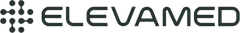
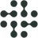
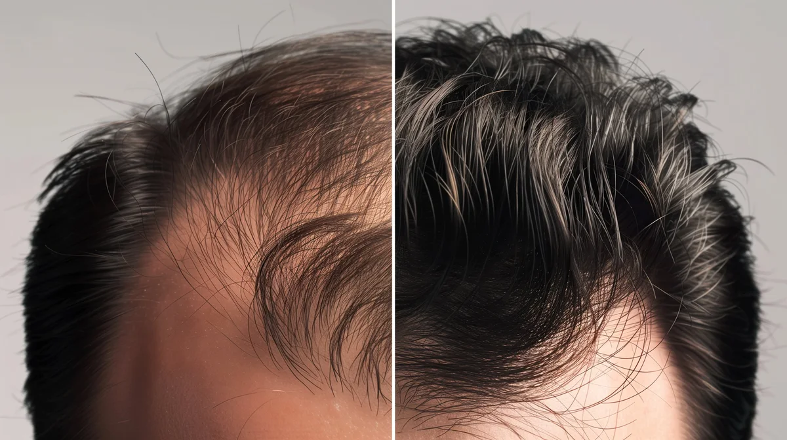
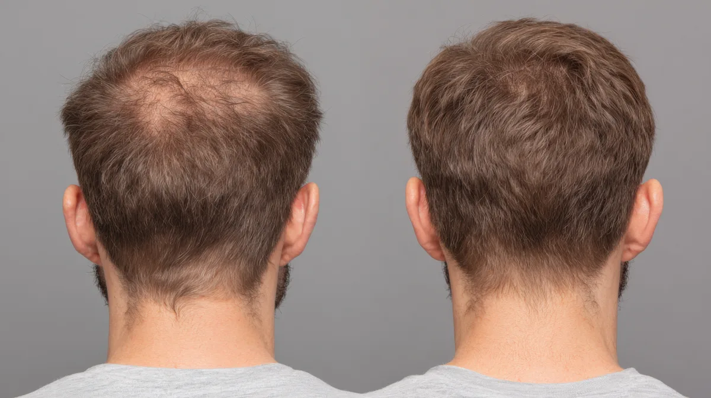
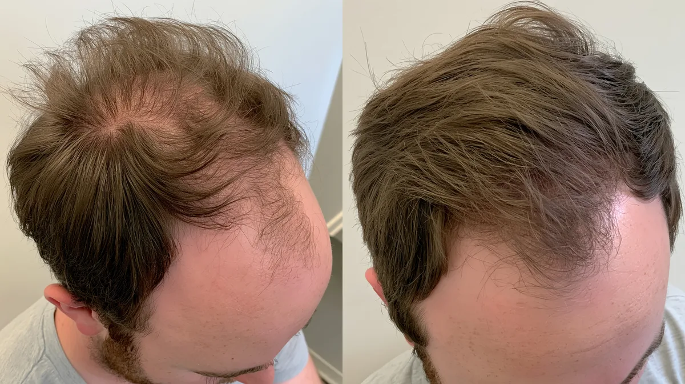
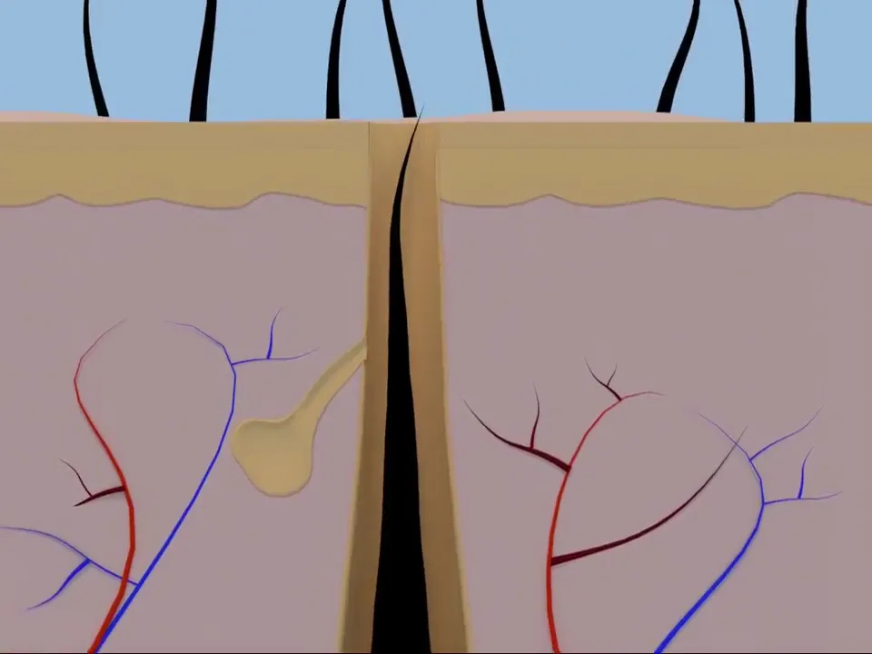

Uma ideia por página, um destino por botão
A LP não vende produto: vende a avaliação médica. O tom é médico, calmo e direto, para o homem de 25 a 34 anos "na fase do boné", que tem medo de piorar e desconfia de promessa.
dor → oferta → prova → mecanismo → comparação → ciência → oferta → objeções → ação
Hero (pergunta) · O custo de esperar (tabela) · CTA final ("Cada dia é um folículo a menos")
Kit de 4 meses porque o resultado costuma aparecer entre o 3º e o 4º mês. "O 4º mês é por nossa conta."
13 blocos, nesta ordem
- 01Faixa de ofertaOferta visível no 1º segundo
- 02Header fixoNavegação + botão "Fazer avaliação"
- 03Hero (sálvia)Dor em pergunta + antes/depois horizontal
- 04Faixa LED (âmbar)Pacote completo em movimento
- 05O custo de esperarTabela ✓/✗ Elevamed × Sem tratar
- 06Resultados3 casos reais com termo assinado
- 07Como funciona + O que esperar4 passos + vídeo do ciclo + Mês 1/4/12
- 08CompareFarmácia × Elevamed (destaque) × Consultório
- 09A ciência por trás3 ícones: DHT → folículo → bloqueio
- 10Kit 4 meses (escuro)3 + 1 sem preço, blocos de meses
- 11DúvidasFAQ + card de segurança
- 12CTA final (sálvia)"Cada dia é um folículo a menos."
- 13Rodapé (escuro)Links legais + farmácia credenciada
Para outro tema, mantenha o esqueleto e troque a dor do hero, a tabela do custo, os casos e a ciência.
Paleta
#213632texto principal, botões, fundos escuros#2F4A44hover de botão#28342Fgrafite do brandbook (logo, impresso)#CBD9B7fundo do hero e CTA final, selos#EEF2E6fundos suaves#F7F8F3fundo padrão da página#FFFFFFcards#DDE3D2bordas e divisórias#56675Ctexto secundário, eyebrows#F5C443SOMENTE faixa LED de oferta#C97B70SOMENTE o X negativo em comparativosProporção aproximada
60% off-white/branco · 25% sálvia · 15% escuro · âmbar só na faixa LED · ✗ suave só no comparativo.
Lexend + Michroma
H1 · 56 / 32px · 500E se a queda parasse agora?H2 · 36 / 28px · 500Simples, discreto e onlineEyebrow · Michroma 11px · .24emQUEDA DE CABELO MASCULINASubtítulo · 18px · 300Avaliação médica online, fórmula manipulada e kit de 4 meses em casa.Corpo · 16px · 300Você responde um questionário de saúde em menos de 5 minutos, sem sair de casa.Card / lista · 14-15px · 400Fórmula manipulada para o seu caso, se prescritaBotão · 16px · 500Começar minha avaliaçãoLegenda · 12-13pxResultados variam de pessoa para pessoa. Tratamento sempre a critério médico.Peso máximo 500. Títulos com letter-spacing −0.02em e text-wrap: balance.
Grade
| Item | Desktop | Celular (≤ 600px) |
|---|---|---|
| Container | 1160px | largura total |
| Seção (cima/baixo · laterais) | 80px · 24px | 48px · 16px |
| Título → conteúdo | 28px | 20px |
| Entre colunas | 56px | empilha |
| Quebras | ≤ 600 celular · 601–900 tablet · ≥ 901 desktop · selo do menu some < 1000 | |
Cantos
Blocos prontos
Cada um é um arquivo HTML independente em componentes/, já usando os tokens.
Arquivos oficiais
Clique para baixar. Use só estes; nada de logo ou ícone redesenhado.


assets/logos/logo.webpassets/logos/logo-claro.webp

assets/logos/simbolo.webp
assets/icones/ciencia-dht.webp
assets/icones/ciencia-folicul.webp
assets/icones/ciencia-bloqueio.webp
assets/imagens/hero-queda-desk-l.webp

assets/imagens/hero-queda-mob.webpKit oficial
assets/imagens/kit-linha.webp

assets/casos/caso-01.webp

assets/casos/caso-02.webp
assets/casos/caso-03.webp

assets/video/ciclo-capilar-poster.webp

assets/grafismos/padrao-claro.svg

assets/grafismos/padrao-escuro.svgRegras de imagem
- Casos: só paciente real com termo de uso de imagem assinado; arquivo
caso-0X, nunca o nome. - Hero: antes/depois horizontal, mostrando testa e entradas.
- Ícones: traço fino, uma cor, sem texto embutido (Adobe Stock 2120276062).
- Vídeo do ciclo: MP4 sem som, com capa; crédito CC BY-SA ao autor obrigatório.
- WebP para imagens; hero ≤ 250 KB; ícones ≤ 20 KB.
- Onde buscar: grupo "Assets" (IconScout, Magnific, Adobe Stock, Storyblocks, Motion Array) e os repositórios awesome-stock-resources, awesome-images e awesome-free-images.
Voz médica, não de vendedor
| Faça | Não faça |
|---|---|
| Dor em pergunta: "E se a queda parasse agora?" | "Recupere seu cabelo em 90 dias" |
| "costuma aparecer", "pode", "a critério médico" | "garantido", "100% eficaz", "cura" |
| "O 4º mês é por nossa conta" | "GRÁTIS!!!", "só hoje", relógio regressivo |
| "Você só paga se o médico aprovar" | Mostrar preço na LP |
| Um texto de botão para a página toda | Botões com textos e destinos diferentes |
Frases-assinatura
"Cuidado em outro nível" · "Leva cerca de 5 minutos" · "Resultados variam de pessoa para pessoa. Tratamento sempre a critério médico." · "Cada dia é um folículo a menos."
Negócio e compliance
- Sem preço na LP
- Paga só após aprovação médica
- Kit: 30% na 1ª parcela + 4º mês sem custo + avaliação + frete
- Cancelamento antes do envio
- Renovação só com confirmação
- Botões → avaliacao.html?origem=slug
- CFM: sem promessa; antes/depois só real e autorizado
- RDC 96/2008 (Anvisa)
- CDC art. 49 × fórmula manipulada
- LGPD: fotos são dado de saúde
- noindex no staging
- Nome + CRM do diretor técnico antes de publicar
- Testar 320–430px e 768–1920px
- Sem rolagem lateral
- Botões largura total no celular
- Checks em SVG inline
- Colunas curtas: sticky no desktop
- prefers-reduced-motion respeitado
Como pedir uma página nova
- Anexe
README.md,tokens/tokens.css,tokens/tokens.jsone os arquivos decomponentes/. - Cole o prompt de PROMPT-IA.md preenchendo tema, slug, público, dor e oferta.
- Antes de publicar, passe o CHECKLIST.md.